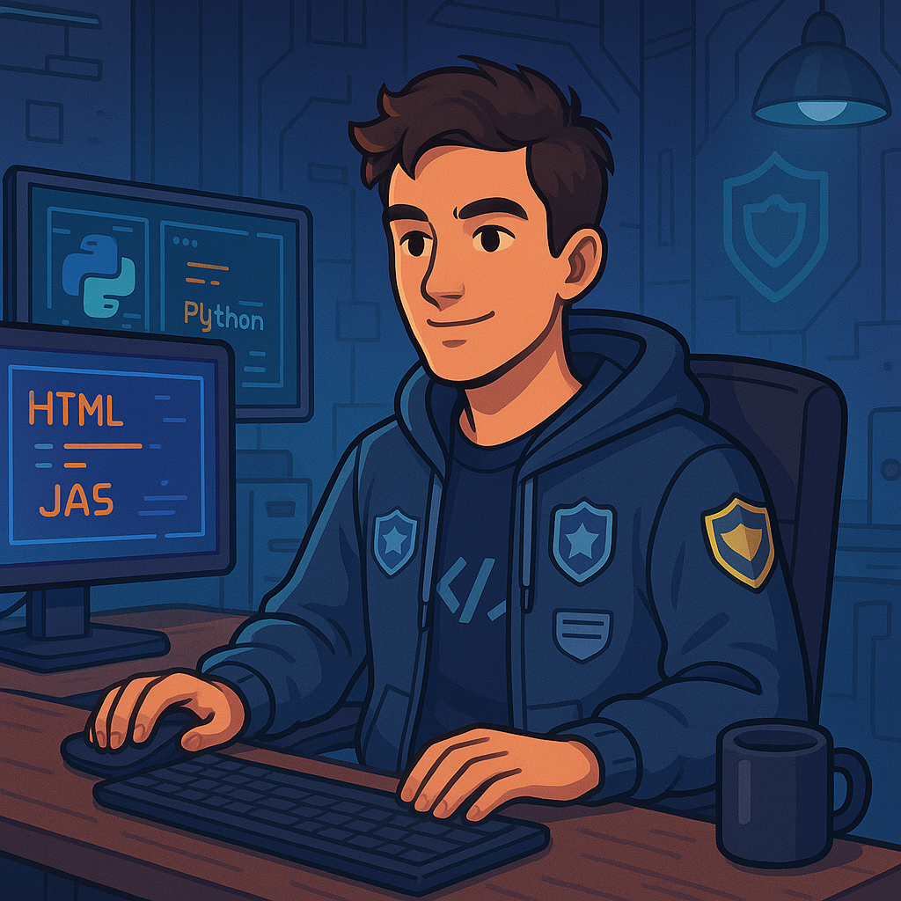

Olá! Sou Piter Lourencini e este é o meu espaço onde compartilho minha trajetória na Polícia Militar e minha jornada na tecnologia.



Olá! Sou Piter Lourencini e este é o meu espaço onde compartilho minha trajetória na Polícia Militar e minha jornada na tecnologia.
Piter Lourencini, com 16 anos de dedicação à Polícia Militar, incluindo 5 anos na Força Nacional, percorreu 23 estados e 5 países. Desde 2019 está de volta ao seu estado de origem e, em 2025, iniciou sua jornada acadêmica em Análise e Desenvolvimento de Sistemas. Atualmente concilia a vida policial com os estudos em tecnologia, mirando um futuro internacional, especialmente na Itália.
Sou apaixonado por futebol, tecnologia e pela minha família, que é minha base. Sonho em viver e programar na Itália após minha carreira policial, unindo minha paixão por tecnologia às minhas raízes italianas.
Preencha seus dados e envie sua mensagem. Responderei assim que possível.